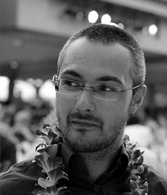

Romain Robbes
I am a "Directeur de Recherche" at CNRS since 2023.
Earlier, I was an Associate Professor at the University of Chile, and the Free University of Bozen-Bolzano, Italy.
Even earlier, I earned my Ph.D at the University of Lugano, Switzerland and studied at the University of Caen, France.
I work in the Progress Team (LaBRI, University of Bordeaux, France), where I conduct research at the interaction of
Empirical Software Engineering and Machine Learning, with interests in Software Evolution, Mining Software Repositories,
and Large Language Models.
I also have some responsibilities in the national and international research community.
You can find more information about my research and activities on DBLP,
Google Scholar, and
Researchr, where you can access my publications,
service roles, and conference activities.
News
2026
2025
2024
- Made two vulgarization talks and participated to a roundtable about LLMs at the University of Bordeaux.
- Serving as PC Member for ICSE 2025
- Paper "Impermanent identifiers: Enhanced source code comprehension and refactoring" accepted at the JSS (congrats Eduardo!)
- Organizing a special session of the GT GL-IA at the national Software Engineering Conference
- Paper "Out of Context: How important is Local Context in Neural Program Repair?" accepted at ICSE 2024 (congrats Julian!) and "What the Fix? A Study of ASAT Rules Documentation" at ICPC 2024 (congrats, Corentin!)
- Paper "INSPECT: Intrinsic and Systematic Probing Evaluation for Code Transformers" accepted at TSE (congrats Anjan!)
- Serving as Keynote co-chair for MSR 2024
- Serving as ERA track Co-chair for SANER 2024
- Joined two CSI working groups: Generative AI (WG coordinator) and Internationalization
- Member of the Scientific Board (Conseil Scientifique d'Institut, CSI) of the CNRS Computer Science Institute (2024-2028)
2023
- Organizing a meeting of the GTs GL-IA and VL in Paris
- Serving as PC Member for FSE 2024 and ICSME 2024
- Paper "JEMMA: An extensible Java dataset for ML4Code applications" accepted at EMSE (congrats Anjan!)
- Serving as co-coordinator of the Working Group on Software Engineering and Artificial Intelligence (GT GL-IA) of the National Research Network on Software Engineering (GDR GPL)
- Joined the CNRS and the University of Bordeaux